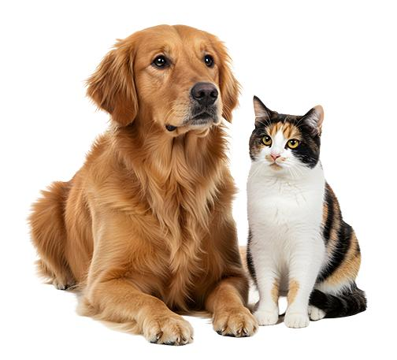
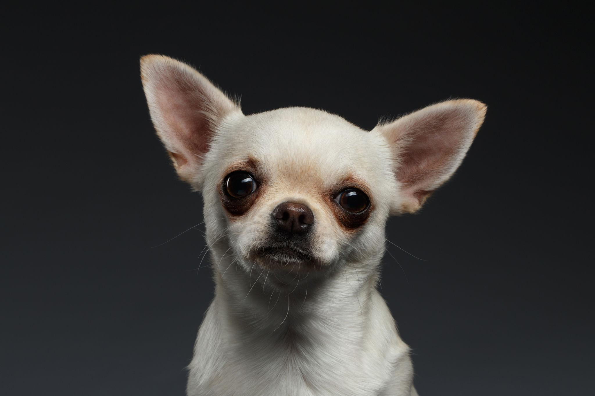
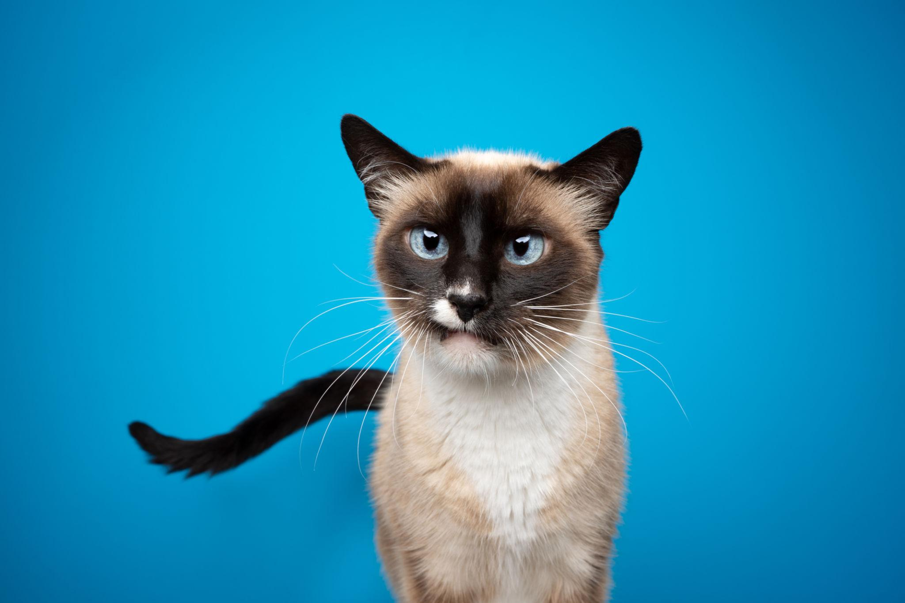
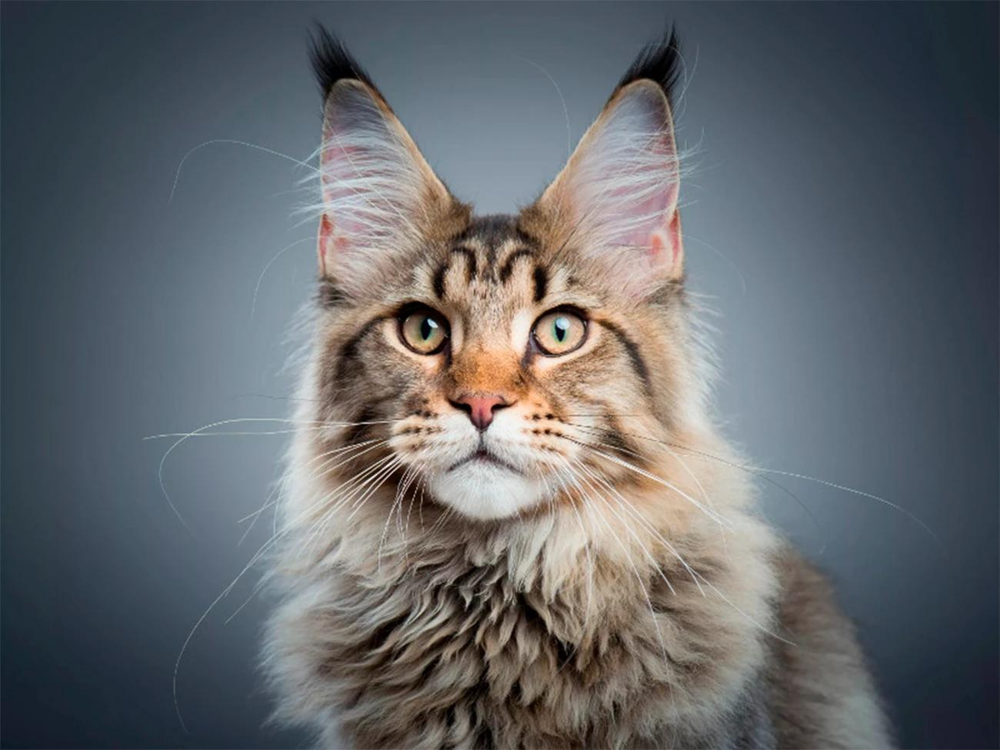
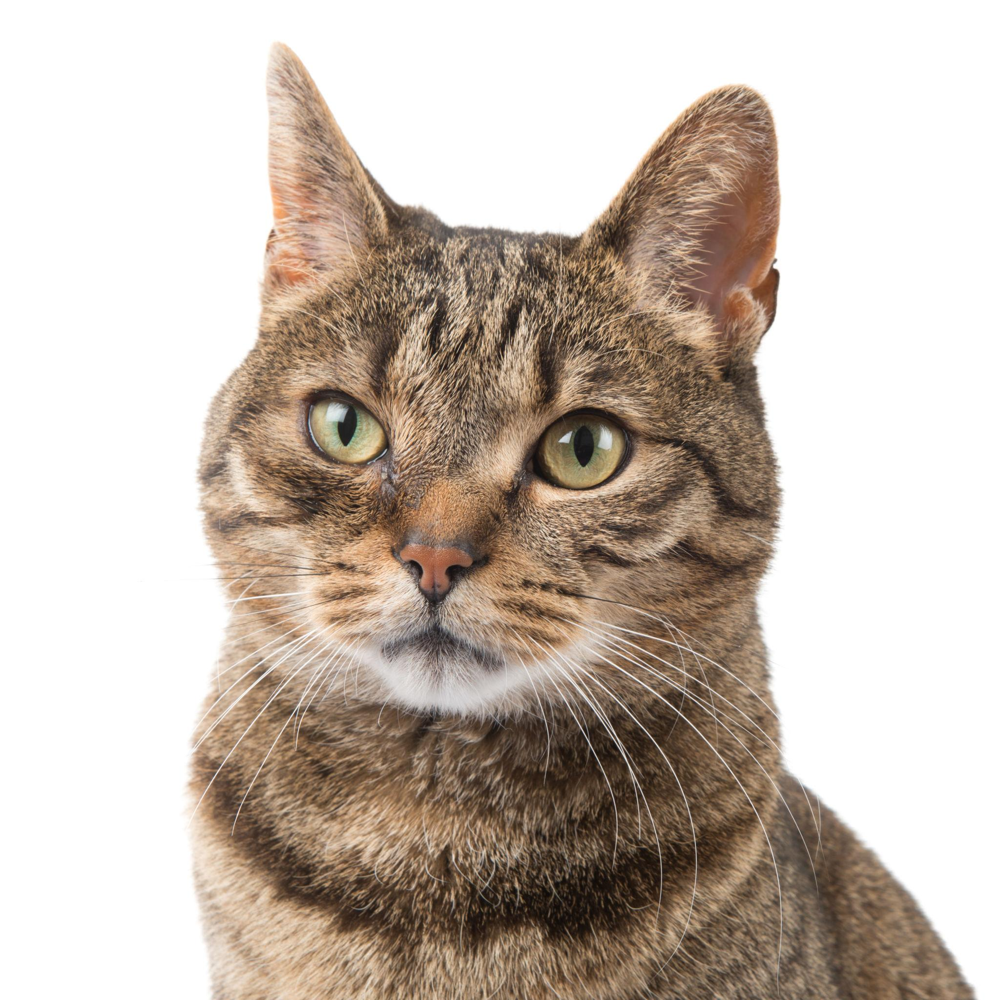

Labrador retriever
Suele ser sociable y activo. Necesita ejercicio diario y compañía.
Descubre razas de perros y gatos, sus características y los cuidados que necesitan para vivir sanos y felices.
Explorar razas
Los perros necesitan compañía, ejercicio, alimentación adecuada y atención veterinaria.
Suele ser sociable y activo. Necesita ejercicio diario y compañía.
Es conocido por su inteligencia y necesita entrenamiento y actividad física.

Es una raza pequeña que necesita un trato cuidadoso y protección.
Suele ser amistoso y disfruta de la actividad y la interacción con las personas.
Los gatos necesitan un ambiente seguro, agua fresca, alimentación apropiada y momentos de juego.
Tiene pelo largo y necesita cepillado frecuente.

Suele ser comunicativo y necesita un ambiente seguro y momentos de juego.

Es un gato grande de pelaje abundante que requiere cepillado regular.

Puede tener muchos colores, tamaños y personalidades diferentes.
Selecciona un tipo de mascota para consultar sus características.
| Raza | Animal | Tamaño | Cuidado principal |
|---|---|---|---|
| Labrador retriever | Perro | Mediano a grande | Ejercicio diario |
| Chihuahua | Perro | Pequeño | Trato cuidadoso |
| Persa | Gato | Mediano | Cepillado frecuente |
| Maine Coon | Gato | Grande | Cepillado regular |
Se muestran todas las mascotas.
Ofrece alimentos adecuados para la especie, edad y necesidades de cada mascota.
Programa visitas veterinarias, mantén las vacunas al día y cuida su higiene.
Dedica tiempo al juego, al ejercicio y a la interacción respetuosa.
Cuéntanos qué mascotas te gustan. Este formulario es una demostración académica y no envía información a un servidor.